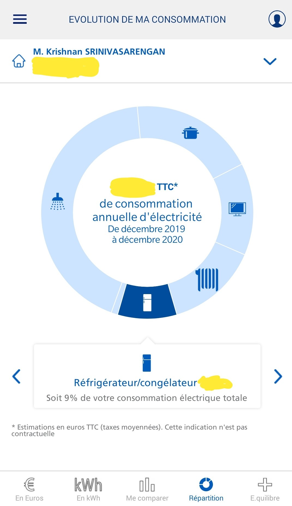
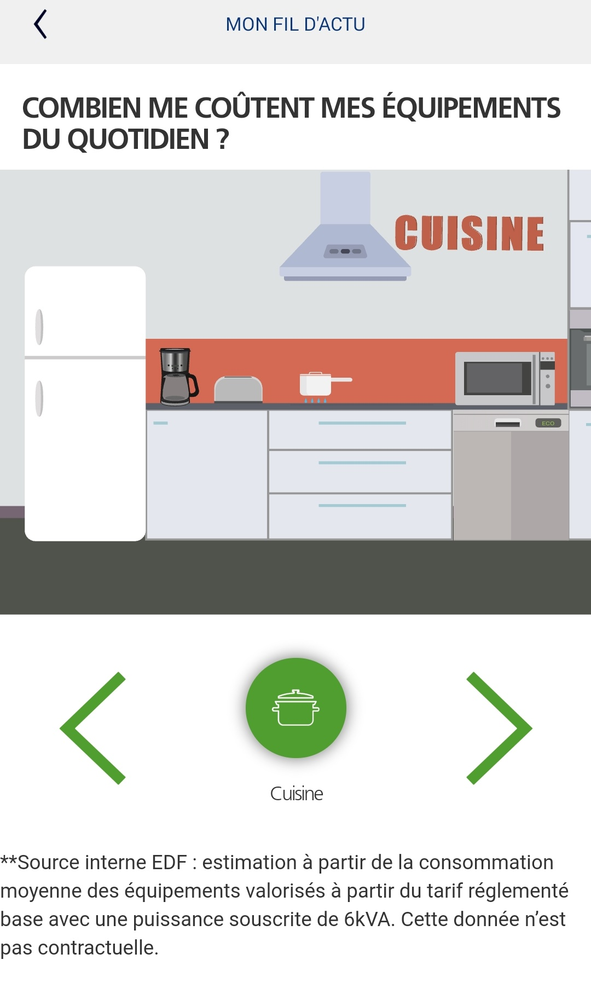
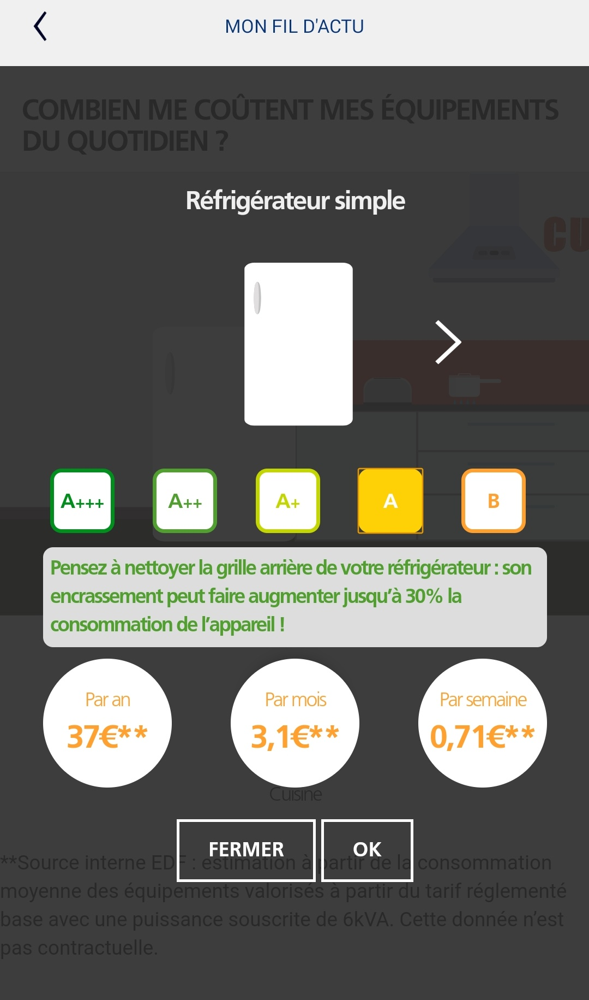
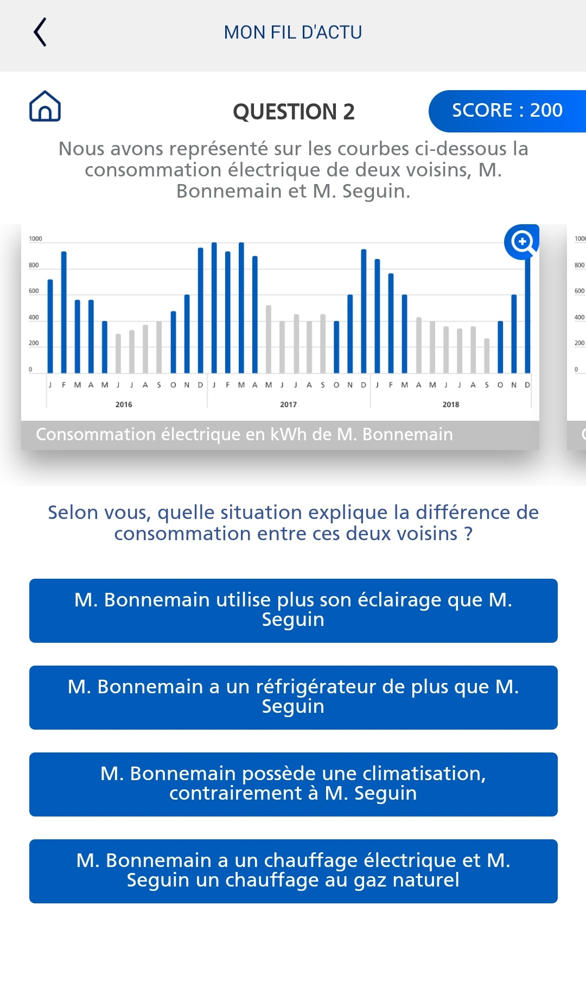

Context
My previous articles on NILM focused on the technology in itself (either through my experience or through a survey of companies that offer NILM solution). In this article, I attempt to look at how energy service providers leverage NILM as part of the service they offer to the clients.
Given my current presence in France and for the sake of focus, I look at the French market.
Electricity Distribution in France
France is one of the largest energy-producing and consumption markets with a unique twist: About 70% of the production comes from nuclear (and hence making the per capita CO2 emission of the country far below compared to countries of similar per capita wealth). The French electricity distribution was a government monopoly until the European directive required the market to open up for private players. This market continues to be dominated by EDF, which holds around 70% of the share. Ever since the opening up of the distribution market a decade or so back, many other providers have started to creep up, with now more than 35 odd companies providing the distribution.
When I started to understand the whole domain, I had to unknot many aspects. The market appears to overflow with companies of different sizes and origin. There are giants like EDF, ENGIE, TOTAL, Eni and new players like OVO, Ohm Energie. Further, companies with experience in other domains jumping in (Like Leclerc and Cdiscount now have their subsidiaries distributing electricity). A full list can be referred to here: fournisseurs-electricite. Note that since gas distribution and electricity distribution intertwine in France, most providers offer both.
The market is so crowded that there are organizations that provide help (through online chatbots) in one’s ability to choose the right providers, such as Hello watt, Hope Énergie.
What’s in the deal?
The large spectrum of companies that offer electricity distribution owes to the opening up of the market. A small part of this also owes to the introduction of smart meters, called Linky. The responsibility to install these smart meters in households across France rests with the electric grid operator, ENEDIS. Enedis is also responsible for the secure collection, transmission and storage of the data generated. This process enables the energy distribution company with which a house has a contract can have access to that data (for billing and other purposes).
A good video explaining what Enedis does and how the Linky smart meters are standardized can be accessed here. The video is in French, though the auto-translation may help. I’m quite intrigued by the ability to standardize something like an electronic device that has to work the same way for several years across a country (that’s for another time).
So, what differentiates the offer from different companies? 1. What production sources are available? Renewable, renewable+nuclear, versus everything. 1. What’s the cost per kW-hr? 1. The type of offer based on usage-behaviour (such as weekend-focused)
Beyond these, some companies insist on the country of origin of the energy sources, whereas some go hyper-local such as Urban Solar Energy, Electricité de PROVENCE. Among these 35 odd companies, several small and independent companies offer purely renewable energy produced electricity. See for instance, Planet OUI, ilek, ekWateur and so on. Nearly one-third of the 35 odd companies I surveyed focused purely on renewable-energy-only production.
I wondered, why are there so many players doing almost the same thing? Sure, it is easy to get into this business now and that you are almost always going to eat into the EDF market share, something that is available for everyone to take a bite. But then, this is how the startup landscape is. Get in and hope the VC money outlasts your rivals? Different companies may have different types of levers to manage the cost of the energy they supply (a great energy trading algorithm in a company or a host of energy production locked-in in another). But from a customer point-of-view, there is little separating them except for the above three factors. So, this number does not look sustainable, and it won’t be long before some consolidation happens.
NILM offerings
My analysis was brief. But I was surprised at the lack of differentiating offers by any of these startups using the Linky data. These offers typically focus on the cost or green or both. It appears that since many of these companies are just setting up shop, they have nothing developed beyond the basic necessity of providing electricity connection. Several of the companies do not even have a ‘Client Webspace’ to check the consumption evolution. For example, OVO Energy says that their version is in beta testing (since they are a mature company from the UK, they are likely not far behind). And a review of Bulb on hello watt says they don’t have a web client (I guess that this is redundant as the comment was from 5 months ago).
So it looks like almost all companies are just starting to provide meaningful insights into the electricity consumption to clients. But we know very well that they have been doing a lot elsewhere. For example, I had referred to this talk by Katie Russell of OVO Energy in my previous NILM blog entry. She talks about her experiences on the analytics on energy data in the UK and engaging with the customers. OVO Energy now has more than a decade of experience.
Even in France, EDF has been providing appliance-category-level disaggregation for a while now. Here is how mine looked for the last year:

Apart from this, EDF also provides day by day consumption, comparison with other similar households, etc. These analytics appear straightforward. Perhaps they are, to an extent. However, one assumption here is that the client agrees to part with their data. Because, for each type of data access, the client needs to give explicit approval to companies. I can understand that EDF can provide these analytics because they already have access to a wealth of client data. So all they have to do is have a few developers and data scientists in place, and voilà, you have these nifty features. Most other companies may struggle because they would have little to no access to client data at the start to train their machine learning models. For a simple feature like ‘comparison with similar households’, one needs access to sufficiently many household data. For a company that is just starting up, this might be virtually impossible as they don’t have data available.
Apart from the data analytics based visualization, several simulation-based visualizations are available. For instance, my EDF app provides a sort of ‘Energy simulator’ that tells me what equipment of this type typically consumes. The visual is fun. We get a visual of different rooms in a house, and we navigate this visual to choose the equipment we want to understand more. Then, we can narrow down further to the specific type in our house or what we want to study. The app then tells us what the typical consumption is and adds some tips to save energy. Behind this fun simulation, EDF has used a wealth of data collected over the years to train and strengthen the models that run the simulation.


Another thing I found quite interesting is the game. Well, it looks actually like a test for people who do a course on ‘Energy data analytics’. One or more consumption curves form the basis of a question, and we have to choose one of the four options given. It is fun, but I think it also makes curious minds more knowledgeable, in particular, about the consumption characteristics of different appliances.

With so many possibilities with the Linky data (sampled at once in 30 minutes), the reason why startups are still slow to pick up is likely due to data availability. The reasoning is a bit twisted: from my confidence in the abilities of some of these startups with what they can do once they have data. For example, one of the NILM researchers I follow, Oliver Parson, works as a Data Scientist in Bulb’s UK team. So, these organizations have the capability and expertise; all they need is data (which will all come in due time). And this is another reason why I suspect consolidation is a certainty in this market. Because if there are several companies, the smart meter data also gets distributed across all these companies. Hence, only big players can provide insightful analytics (to save energy, for instance), which might become a differentiator in a crowded market with near-similar offers. And this would naturally lead to mergers or drop-outs.
Some Final Thoughts
Of course, I might be wrong in my assertion here. Because, my analysis was pretty superficial (limited by the lack of access to the app from each of these companies). But what is clear is that the French electricity distribution market is due for some analytics spice-up. It looks like the established players have all the cards, but something new can come from innovative startups and small players. One thing is clear, if the French startups have to differentiate themselves in this regard, they have to ramp up their analytics work compared to those coming in with a lot more experience (such as OVO Energy or Bulb) or with a lot of data and experience (like EDF).